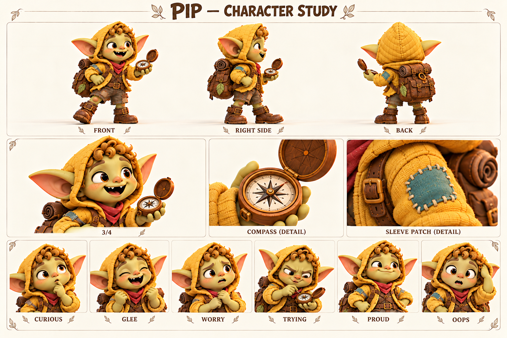

Чего хочет
Получить настоящее поручение и быть услышанным, когда сообщает находку.
Хочет первым сделать открытие и учится отличать догадку от того, что действительно увидел.
Ребёнок, племянник Тиша; деятельная половина пары Пип–Фика.

Медно-золотые кудри; шафрановый капюшон; бирюзовая заплата; компас.
Палитра: Шафран / мёд / бирюза.
Пип знает деревню по местам, где можно что-нибудь обнаружить: под ступенькой, за корзиной, возле мастерской. Ему нравится приносить взрослым находки, даже если это уже знакомая всем гайка. Тиш для него — человек, который уходит по тропе и возвращается с историей. Пип пытается повторить эту уверенность в безопасных маленьких исследованиях у дома.
Компас стал его первым настоящим инструментом. Корень помог понять, почему стрелка не обязана указывать на то, что хочется найти. Но Пип по-прежнему иногда объявляет направление раньше, чем дождался её остановки. Однажды он уверенно повёл Фику к «неизвестному ручью», который оказался канавкой после дождя. Ему было стыдно, пока Фика не нарисовала там целую карту для жуков: ошибка тоже могла стать открытием, если назвать её честно.
В дальнейшем он может получить небольшое настоящее поручение — отметить сухую дорожку между домами или проверить указатель вместе со взрослым. Важна не награда за смелость в опасности, а опыт доведённой до конца проверки. Пип остаётся ребёнком, которому разрешено шумно радоваться, ошибаться и просить объяснение. Он не должен отвечать за спасение взрослых или тайком проходить опасный маршрут.
Получить настоящее поручение и быть услышанным, когда сообщает находку.
Научиться останавливаться, проверять и признавать вклад Фики.
Что его будут считать слишком маленьким и не станут слушать.
Называет первую догадку фактом и перебивает от нетерпения.
Энергия, любопытство, готовность пробовать и радоваться чужому успеху, когда вспомнит оглядеться.
Хочет выглядеть опытным, но задаёт самые прямые и полезные вопросы.
Темп и ритм. Быстрые короткие фразы, вопрос часто появляется раньше конца предыдущей мысли.
Слова и построение фразы. Смотри, нашёл, настоящий, а почему, почти. Простые конкретные слова.
Юмор. Буквальные выводы и чрезмерно серьёзное отношение к маленькой находке.
Под давлением. Сначала оправдывается, потом честно признаётся одной короткой фразой.
Как проявляет заботу. Зовёт другого посмотреть и делится найденным.
Чего избегать. Не использовать лепет, взрослую саркастичность, постоянную глупость или образ непослушного наказуемого ребёнка.
| Ситуация | Реплика или действие |
|---|---|
| Находка | Смотрите! След! Я ещё не знаю чей, но уже нашёл. |
| С Фикой | Я заметил лужу. А Фика заметила, что это не река. |
| Вопрос | Если север там, почему домой сюда? |
| Ошибка | Я сказал слишком рано. Давайте проверим. |
| Поручение | Настоящее? И потом показать, что получилось? |
| Забота | Подожди, я тебе тоже оставил место посмотреть. |
| Подпись на листе | Состояние | Актёрская задача |
|---|---|---|
| CURIOUS | Любопытство | Глаза вверх к предмету, приоткрытый рот. |
| GLEE | Ликование | Кулаки у груди, открытый смех. |
| WORRY | Тревога | Сжимает компас, ищет взрослого взглядом. |
| TRYING | Старание | Хмурит брови над инструментом, высовывать язык необязательно. |
| PROUD | Гордость | Выпрямляется, подбородок чуть вверх, улыбка огромная. |
| OOPS | Ой | Замирает, глаза круглые, ладонь к капюшону. |
Движение: Короткие быстрые шаги, запоздалая остановка корпуса; во время проверки намеренно удерживает обе ступни на месте.
| План | Что показывает |
|---|---|
| Общий план спереди | Силуэт, лицо, одежда, положение ступней; без потери главных признаков. |
| Боковой ракурс | Глубина фигуры, профиль лица, предметы на ремнях и посадка одежды. |
| Вид со спины | Причёска, крепления, рюкзак либо панцирь; признаки не зеркалятся. |
| Средний план в три четверти | Лицо вместе с характерным жестом и позой корпуса. |
| Крупные детали | Материал и узнаваемые предметы; особенности лица, уха, руки или панциря. |
| Шесть эмоциональных портретов | Взгляд, брови, рот и положение головы; у существ также усики, крылья и поза. |
Первое полезное поручение у деревни, выполненное вместе с Фикой.